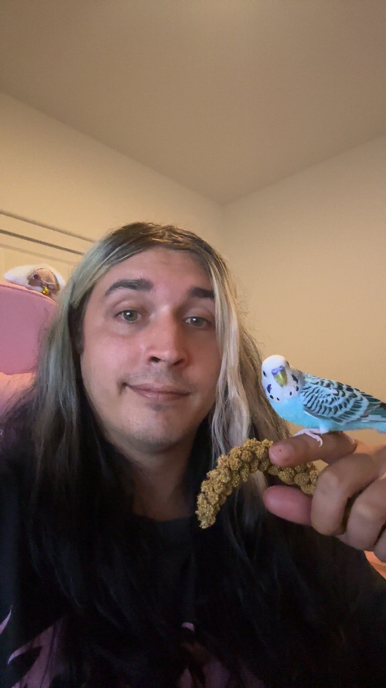

About Me
My name is Samuel Iannazzo, I prefer to go by just Sam. I am 29 years old, and I am currently going to college to pursue an associates degree in Information Technology. This is my second class for the front-end web development certification. I will be pursuing a full-stack certification while attending Lemoore College.
In my free time I enjoy going to shows, as of recent I just saw The Story So Far as well as Girl of Glass live in Los Angeles. Other things I enjoy are riding my motorcycle daily, as well as reading in my free time. The last book I finished was Dantes Inferno by Dante Alighieri. This was my second time reading this book and I plan to read the rest of his Divine Comedy series.
Lastly one of the most important things to me are my birds. I have two parakeets named Captain and Beaky, Captain is seen on my finger in the photo below. My other bird is a cockatiel named Uno, he was adopted from my voworker who's wife breeds birds.
